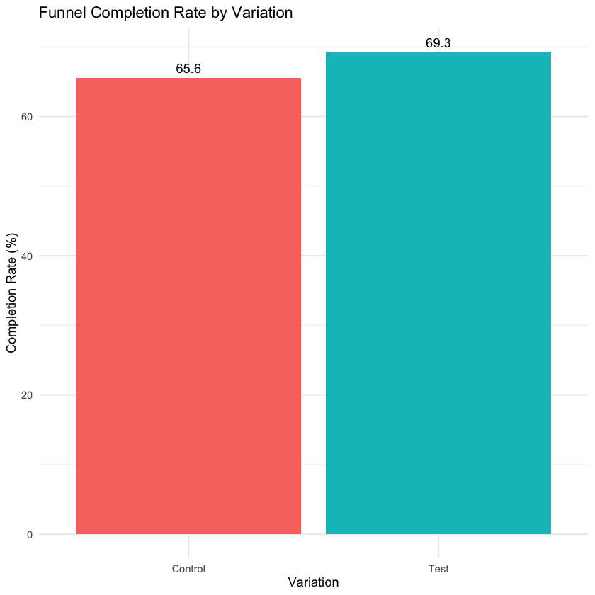

Tutorial Class 08 Set 01 - Causal Analytics & Improving User Sign Up Experiences¶
Learning Goals¶
By the end of this tutorial, students should be able to:
- Describe how experiments help evaluate product or design changes.
- Join and prepare experimental and event-level datasets to compute key outcomes such as funnel completion rates.
- Compare and interpret results across variations, expressing differences in both percentage points and relative terms, and evaluating whether they are meaningful in a business context.
- Communicate analytic findings in clear, decision-oriented language suitable for a managerial audience, using one concise table or figure.
The Business Challenge¶
A fast-growing fintech company has just completed an A/B test to evaluate a new sign-up process that existing users must complete before accessing a new feature release in their account dashboard. The goal of the experiment was to introduce this new process without creating excessive friction or drop-off during sign-up.
The company rolled out a Test variation of the sign-up flow, updating the layout and copy of key steps, while a Control group kept the original version. You’ve received detailed event-level data showing when each user started, moved through the funnel, and confirmed. The product team wants to know not only whether the Test increased completions, but why — and whether it created any new friction for users.
How do tech firms use analytics and experimentation?
In modern tech firms, analysts are embedded within product teams and play a central role in decision-making. Their job is to evaluate changes to the user experience (UX) using data rather than intuition.
Small design choices—such as layout, wording, or the number of steps—can meaningfully affect user behaviour at scale. To assess these changes, firms rely on A/B testing, comparing different versions of a feature on real users.
Common metrics include:
- Completion rates.
- Drop-off at each step of a funnel.
- Time to complete key actions.
- Downstream engagement and retention.
The stakes are commercial. Even modest improvements in conversion or retention can compound into large gains in revenue and growth.
The analyst’s role is not just to determine whether a change worked, but to explain why, for whom, and with what trade-offs. This requires combining causal inference with careful behavioural analysis.
Your Task
- Quantify the effect of the new variation on completion rates.
- Interpret the magnitude of the improvement — is it large, small, or somewhere in between?
- Explore additional metrics to understand user behaviour inside the sign-up process.
- Prepare an executive summary explaining whether the new sign-up process should be rolled out to all customers.
Loading R Packages and Data¶
Here are the R packages we will need to complete the exercises:
library(tidyverse) # data wrangling
library(lubridate) # dates and times
library(janitor) # cleaning up and duplicate checks
library(vtable) # balance table
The data comes in multiple files that we will load as we need them.
Prepare these Exercises before Class¶
Prepare these exercises before coming to class. Plan to spend 30 minutes on these exercises.
Exercise 1: Understanding the Business Context to See Why We Use Experiments to Test¶
Before analysing the data, take a step back and think about the business motivation behind this experiment.
The company has introduced a new personalised insights dashboard — but to use it, existing customers must complete an additional sign-up process. This is a risky move. Each additional step in the customer journey can introduce friction and reduce completion.
Completion is not just a UX metric — it is directly tied to financial performance. If fewer users complete the process, fewer access the new feature, reducing engagement, retention, and ultimately revenue. At scale, even small drops in completion can translate into large losses in customer lifetime value.
In product analytics, we often represent a sign-up process as a funnel — a sequence of steps where users either continue or drop out at each stage (for example, from start to confirm). Each step is a decision point.
If we observe differences in completion rates or drop-off across steps, an important question arises: are these differences caused by the new design, or by other factors?
(a)
Why might the company choose to test a new sign-up flow rather than launch it for all users immediately?
(b)
What outcomes or trade-offs should the company pay attention to when evaluating the new flow (think about success from the users’ perspective vs the company’s perspective)?
(c)
What can a funnel reveal about customer behaviour that a simple completion rate cannot?
(d)
Rather than run an experiment, the company could just implement the new sign-up process for all users going forward and then compare completion rates before and after this change. Why is this problematic?
(e)
How does random assignment in an A/B test help us isolate the effect of the new design?
Solution
(a)
Why might the company choose to test a new sign-up flow rather than launch it for all users immediately?
- A/B testing reduces the risk of introducing a worse experience.
- It allows decisions to be based on observed behaviour rather than assumptions.
- It protects customers from large-scale exposure to a poor design.
- It generates insight into where and why users drop off.
(b)
What outcomes or trade-offs should the company pay attention to when evaluating the new flow (think about success from the users’ perspective vs the company’s perspective)?
- Completion vs. friction: Does the new flow increase completion at the cost of more effort?
- Speed vs. accuracy: Are users completing quickly but providing less useful information?
- Short-term vs. long-term engagement: Do users continue using the feature after signing up?
- Experience vs. conversion: Does higher completion come with worse perceived quality.
- Company success means more users complete the process and access the feature, supporting engagement and revenue. Customer success means the process is quick, intuitive, and does not introduce frustration or uncertainty.
(c)
What can a funnel reveal about customer behaviour that a simple completion rate cannot?
- Where users drop off (step-level insight, not just overall success/failure).
- How users move through the process — for example, skipping, looping, or hesitating.
- Severity of friction points: Identifies which steps drive the biggest loss or confusion.
- Where improvements will have the greatest impact.
(d)
Rather than run an experiment, the company could just implement the new sign-up process for all users going forward and then compare completion rates before and after this change. Why is this problematic?
- Other factors may change over time (e.g. marketing activity, seasonality, user composition).
- Any observed change may reflect these external influences rather than the new design.
- Before/after comparisons cannot isolate the causal effect of the change.
(e)
How does random assignment in an A/B test help us isolate the effect of the new design?
- Random assignment ensures the Control and Test groups are comparable on average.
- It balances both known and unknown factors between groups.
- Differences in outcomes can therefore be attributed to the new design rather than pre-existing differences.
Exercise 2: Exploring the Experimental Data¶
It’s time to look at the data from the experiment.
You have two datasets:
ab_test_demographics: information about each client.ab_test_experiment_clients: information on which clients were assigned to the Control or Test variation.
Our goal is to merge these datasets and check whether allocation to treatment and control groups is balanced across demographic characteristics.
(a)
Load the two datasets into R by completing the code below:
demogs <- YOUR_CODE
treatment <-
YOUR_CODE |>
clean_names()
What problem does clean_names() solve, and how might inconsistent column names affect later steps?
(b)
Merge the treatment indicator variable into the demogs data by completing the code below. We recommend you use an inner_join() to do this.
demogs <-
demogs |>
YOUR_CODE
What does a join do in this context, and why must these datasets be combined before analysing the experiment?
(c)
Next, we want to inspect and clean the treatment variable. First, use distinct() to find the values that variation takes in our dataset.
demogs |>
YOUR_CODE
What is this step checking, and why is it important to verify these values before proceeding?
Second, use drop_na() to remove rows with missing treatment labels.
demogs <-
demogs |>
YOUR_CODE
Why do we drop these observations?
(d)
In a well-designed experiment, each variation should include comparable types of users. How does this connect back to the idea of random assignment?
(e)
Complete the code below to compare demographic compositions of users across treatments.
demogs |>
select(-client_id) |>
st(group = 'YOUR_TREATMENT_INDICATOR')
What is this table helping us assess, and why do we check this before comparing outcomes?
Solution
(a)
demogs <-
read_csv("data/ab_test_demographics.txt")
treatment <-
read_csv("data/ab_test_experiment_clients.txt") |>
janitor::clean_names()
clean_names() standardises column names into a consistent format, usually lowercase with underscores. This is useful because consistent variable names reduce errors and make later joins and data manipulation easier.
(b)
demogs <-
demogs |>
inner_join(treatment, join_by(client_id))
A join combines the demographic data with the treatment assignment data using the common identifier client_id.
This is necessary because:
- The demographic dataset contains user characteristics
- The treatment dataset contains variation assignment
We need both in the same dataset before we can compare treatment groups (and so assess balance).
(c)
# view unique values
demogs |>
distinct(variation)
| variation <chr> |
|-----------------|
| Test |
| Control |
| NA |
This checks the unique values in the variation variable. It is important because we need to verify that the treatment variable contains usable categories such as “Control” and “Test”, and identify missing or unexpected values.
# drop missing or unusable rows
demogs <-
demogs |>
drop_na(variation)
This removes rows where variation is missing. We do this because observations without a valid treatment assignment cannot be used in a treatment-versus-control comparison.
(d) In a well-designed experiment, both variations should contain similar types of users. This connects directly to the idea of random assignment — if users are randomly allocated, differences in demographics should appear only by chance. Balanced characteristics increase confidence that later performance differences are due to the new sign-up flow, not underlying user differences.
(e)
demogs |>
select(-client_id) |>
st(group = 'variation')
Summary Statistics
| variation | Control | | | Test | | |
|------------------|---------|--------|--------|-------|--------|--------|
| Variable | N | Mean | SD | N | Mean | SD |
| clnt_tenure_yr | 23527 | 12 | 6.9 | 26961 | 12 | 6.8 |
| clnt_tenure_mnth | 23527 | 151 | 82 | 26961 | 150 | 82 |
| clnt_age | 23526 | 47 | 16 | 26961 | 47 | 16 |
| gendr | 23527 | | | 26961 | | |
| ... F | 7543 | 32% | | 8716 | 32% | |
| ... M | 7970 | 34% | | 8977 | 33% | |
| ... U | 8014 | 34% | | 9266 | 34% | |
| ... X | 0 | 0% | | 2 | 0% | |
| num_accts | 23527 | 2.3 | 0.54 | 26961 | 2.2 | 0.53 |
| bal | 23527 | 150147 | 295807 | 26961 | 148963 | 307374 |
| calls_6_mnth | 23527 | 3.1 | 2.2 | 26961 | 3.1 | 2.2 |
| logons_6_mnth | 23527 | 6.2 | 2.2 | 26961 | 6.1 | 2.2 |
We check balance first because it verifies that the experimental design was implemented credibly. The summary table (st()) should show nearly identical means and proportions across groups. Small random differences are expected, but no systematic gaps should appear.
If Control and Test differ systematically at baseline, then later differences in completion or behaviour may not be caused by the new sign-up flow. Checking balance first protects the credibility of the causal comparison.
Exercise 3: Working with Web Log Data¶
Now that you’ve checked that users were randomly assigned to the Test and Control groups, it’s time to examine what they actually did inside the experiment.
In this step, you’ll work with event-level data — information about each time a user interacted with the sign-up process.
(a)
Load and inspect the web log data. The data are split across two files. Run the code below to combine them into one dataset.
weblogs_files <- c(
'data/ab_test_web_data_pt_1.txt',
'data/ab_test_web_data_pt_2.txt'
)
weblog <-
weblogs_files |>
map_df(read_csv)
glimpse(YOUR_CODE)
What problem does map_df() solve here, and why might the data be stored across multiple files?
(b)
Explain the structure of the data. What kind of information does each row represent? How is this different from the demographic dataset used earlier?
(c)
A common problem when working with event log data is duplicate rows, where the same information is recorded multiple times.
Clean the data to remove duplicate rows by completing the code below:
weblog_clean <-
weblog |>
YOUR_CODE
What might happen if we failed to remove duplicates before computing outcomes?
(d)
Merge the cleaned web log data with the dataset that contains information on which clients are assigned to each treatment. Drop any observations with missing treatment assignments.
weblog_clean <-
weblog_clean |>
YOUR_CODE |>
YOUR_CODE
Why do we restrict the dataset to users with valid treatment assignments before analysing behaviour?
Solution
(a)
weblogs_files <- c(
'data/ab_test_web_data_pt_1.txt',
'data/ab_test_web_data_pt_2.txt'
)
weblog <-
weblogs_files |>
map_df(read_csv)
glimpse(weblog)
Rows: 755,405
Columns: 5
$ client_id <dbl> 9988021, 9988021, 9988021, 9988021, 9988021, 9988021, ...
$ visitor_id <chr> "580560515_7732621733", "580560515_7732621733", ...
$ visit_id <chr> "781255054_21935453173_531117", ...
$ process_step <chr> "step_3", "step_2", "step_3", "step_2", "step_3", ...
$ date_time <dttm> 2017-04-17 15:27:07, 2017-04-17 15:26:51, ...
map_df() applies read_csv() to each file in weblogs_files and then combines the results into one dataset.
This is useful because it saves us from reading and binding each file manually.
The data may be stored across multiple files because behavioural datasets are often large, collected in batches, or split for storage and processing reasons.
(b)
Each row represents a single user (client_id) taking some action (process_step) at a particular point in time (date_time).
This differs from the demographic dataset because:
- the demographic data are user-level, with one row per client
- the web log data are event-level, with multiple rows per client possible
(c)
weblog_clean <-
weblog |>
distinct()
distinct() drops any exact duplicate rows — ensuring that the same event isn’t counted twice.
Removing duplicates prevents over-counting when later computing events per user or funnel completion rates.
(d)
weblog_clean <-
weblog_clean |>
inner_join(treatment, join_by(client_id)) |>
drop_na(variation)
Joining these data sets allows us to compare behaviour across the Test and Control groups.
drop_na(variation) removes observations without a valid treatment label. We restrict the dataset to users with valid treatment assignments because:
- only those users belong to the experiment in a usable way
- observations without treatment status cannot be placed in Control or Test
- keeping them would weaken the credibility of later comparisons
In-Class Exercises¶
You will discuss these exercises in class with your peers in small groups and with your tutor. These exercises build from the exercises you have prepared above, you will get the most value from the class if you have completed those above before coming to class.
Exercise 4: Measuring Funnel Completion¶
Now that we’ve linked event-level data with the experimental information, let’s create our first outcome measure: funnel completion.
Each client goes through a series of process steps (for example, start, step_1, step_2, confirm).
A funnel completion occurs if the client reaches the final step, "confirm".
(a)
Compute a client-level indicator for whether each client completed the funnel by completing the code below.
completion_by_visitor <-
YOUR_CODE |>
group_by(YOUR_CODE) |>
YOUR_CODE(
completed = any(YOUR_CODE == "confirm"),
.groups = "drop"
)
What does any() do here, and why must we aggregate from event-level data to client-level outcomes?
(b)
We want to see if the new sign-up process is more effective. Therefore, we first need to summarise completion rates by treatment.
completion_summary <-
YOUR_CODE |>
YOUR_CODE |>
summarise(
completes = YOUR_CODE,
total = YOUR_CODE,
pct = completes / total * 100,
.groups = "drop"
)
What do completes, total, and pct represent, and why do we summarize at the treatment-group level?
(c)
Create a simple visual to compare completion rates across the two variations. Use a bar chart to display the percentage of users who completed the funnel.
completion_summary |>
YOUR_CODE +
YOUR_CODE +
geom_text(aes(label = round(pct, 1)), vjust = -0.5) +
labs(
title = "Funnel Completion Rate by Variation",
x = "Variation",
y = "Completion Rate (%)"
) +
theme_minimal() +
theme(legend.position = "none")
What does this visual add beyond the table, and why is a simple chart often preferred in a business setting?
(d)
Complete the code below to compute and interpret the ‘effect’ of the new sign-up process on completion. Use lag() to compare the Test group to the previous row after ordering the summary table.
completion_diff <-
completion_summary |>
arrange(YOUR_CODE) |>
mutate(diff_pct_points = YOUR_CODE) |>
summarise(diff_pct_points = YOUR_CODE)
completion_summary |>
arrange(YOUR_CODE) |>
mutate(
pct_change = YOUR_CODE
)
Because the Control row has no previous row, the lag() result for Control will be missing. Report the Test row’s difference.
By how many percentage points did the change in sign-up process influence completions? What is the difference in percentage points and percent change, and why do we typically report percentage points in this setting?
(e)
Complete the code below to express the effect size in standard deviation units.
diff_rate <- completion_diff |>
pull(diff_pct_points) / 100
control_sd <-
completion_by_visitor |>
YOUR_CODE |>
YOUR_CODE(sd_rate = YOUR_CODE) |>
pull(sd_rate)
diff_sd_units <- diff_rate / control_sd
print(diff_sd_units)
What does dividing by the standard deviation tell us about the size of the effect? What does this help us better understand?
(f)
Would you consider this a small, moderate, or large effect in a typical online experiment? Explain your answer.
Solution
(a)
completion_by_visitor <-
weblog_clean |>
group_by(variation, client_id) |>
summarise(
completed = any(process_step == "confirm"),
.groups = "drop"
)
The any(process_step == "confirm") condition checks whether a client ever reached the “confirm” step.
This converts multiple event-level rows into a single user-level outcome:
- TRUE if the user completed the funnel
- FALSE otherwise
We aggregate because the data are recorded at the event level, but the outcome of interest is defined at the user level.
(b)
completion_summary <-
completion_by_visitor |>
group_by(variation) |>
summarise(
completes = sum(completed),
total = n(),
pct = completes / total * 100,
.groups = "drop"
)
This summary table provides the key comparison for the experiment.
We have the following arguments inside summarise():
completes= number of users who completedtotal= number of users in each grouppct= percentage of users who completed
We summarise at the treatment-group level to compare outcomes between Control and Test.
(c)
completion_summary |>
ggplot(aes(x = variation, y = pct, fill = variation)) +
geom_col() +
geom_text(aes(label = round(pct, 1)), vjust = -0.5) +
labs(
title = "Funnel Completion Rate by Variation",
x = "Variation",
y = "Completion Rate (%)"
) +
theme_minimal() +
theme(legend.position = "none")

The plot visually compares completion rates across variations.
Bars make it easy to see which variation performs better and by how much.
Adding text labels helps decision-makers read exact percentages directly from the chart.
(d)
completion_diff <-
completion_summary |>
arrange(variation) |>
mutate(diff_pct_points = pct - lag(pct)) |>
summarise(diff_pct_points = last(diff_pct_points))
completion_summary |>
arrange(variation) |>
mutate(pct_change = (pct - lag(pct)) / lag(pct) * 100)
| variation <chr> | completes <int> | total <int> | pct <dbl> | pct_change <dbl> |
|-----------------|-----------------|-------------|-----------|------------------|
| Control | 15434 | 23532 | 65.58729 | NA |
| Test | 18687 | 26968 | 69.29324 | 5.650411 |
The difference in completion rates (in percentage points) represents the estimated effect of the new sign-up flow.
After ordering the rows so that Control comes before Test, lag() uses the Control completion rate as the comparison point for the Test row.
If Control = 65.6 and Test = 69.3%, then the Test version increased completions by 3.7 percentage points, or ~5.6%.
We report percentage points because:
- they measure absolute differences in rates
- they are clearer and standard in business settings
Because treatment was randomly assigned and balance was confirmed earlier, this difference can be interpreted as the causal effect of the new design.
(e)
diff_rate <- completion_diff |>
pull(diff_pct_points) / 100
control_sd <-
completion_by_visitor |>
filter(variation == "Control") |>
summarise(sd_rate = sd(completed)) |>
pull(sd_rate)
diff_sd_units <- diff_rate / control_sd
print(diff_sd_units)
[1] 0.07800477
This expresses the treatment effect in standard deviation units.
control_sdmeasures the natural variation in completion outcomes.- Dividing the effect by the SD shows how large the effect is relative to that variation.
An effect of around 0.08 SD is small in statistical terms but typical for online experiments.
This provides a scale-free measure of magnitude, helping us judge whether the effect is meaningful beyond just the raw percentage-point difference.
(f)
The effect is small in statistical terms (~0.08 SD), but can still be economically meaningful.
For example:
-
If 1,000,000 users go through the process, a 3.7 p.p. increase yields ≈ 37,000 additional completions.
-
If each completion is worth:
- $10 → ≈ $370,000
- $50 → ≈ $1.85 million
Even modest improvements in conversion can therefore generate large gains at scale.
Exercise 5: Communicating Experimental Insights¶
Now we need to translate your analytical results into a short executive brief written for a business audience.
Your goal is to communicate what was tested, what happened, and what the company should do next — clearly and persuasively, without technical detail.
WarningInstructions
Length: 400 words.
Exhibit: 1 table or figure.
Write this as an executive brief to be read and understood by managers.
- Bullets must be written as full sentences.
- Use the writing principles from Write Like an Amazonian — short, declarative sentences; clarity before style.
- No visible code in the brief.
- Do not produce new analysis, tables, or figures in this section — use the results already created in Exercise 4.
INSERT YOUR FIGURE OR TABLE HERE - For example: your completion-rate comparison chart or summary table from Exercise 4.
-
Executive Summary - Summarise in 3-4 sentences:
- The business problem
- The intervention
- The key result
- Why it matters (economic significance)
-
Key Insights
- Up to 3 bullets describing what the data and analysis show.
- Use clear, declarative statements to describe what the data show.
- Report results in percentage points
- Avoid technical language
-
Business Implications
- Up to 3 bullets on why these findings matter for the organisation.
- Connect the analytics result back to strategic goals.
-
Recommended Actions
- Up to 3 bullets outlining clear, actionable next steps.
- Recommendations should be specific, realistic, and aligned with business priorities.
Solution
There is no unique correct answer, but the following is a strong example of how to answer this question.
-
Executive Summary: We tested a new sign-up flow required for users to access a personalised insights dashboard. We randomly assigned users to the existing (Control) or redesigned (Test) flow. The new flow increased completion rates from 65.6% to 69.3%, a 3.7 percentage-point improvement. While modest, this uplift is meaningful at scale and supports adopting the new design.
-
Key Insights
- Completion rates were 3.7 percentage points higher in the Test group than in Control.
- This represents a consistent, real-world improvement typical of successful online experiments.
- The results suggest the redesigned flow reduces friction and improves user progression through the funnel.
-
Business Implications
- Higher completion enables more users to access the dashboard, increasing engagement and product usage.
- Even small improvements in conversion can generate large gains when applied across a large user base.
- Improved user experience reduces the risk of drop-off during critical onboarding steps.
-
Recommended Actions
- Roll out the new sign-up flow to all users.
- Monitor downstream metrics (e.g. engagement, retention) to confirm sustained impact.
- Conduct follow-up tests to identify which design elements drove the improvement.
Exercise 6: Understanding Mid-Funnel Outcomes¶
After reviewing your executive brief, one manager comments: "This tells me how many users finished the sign-up flow — but I want to understand what happened in the middle. Where exactly are we gaining or losing customers?"
(a)
What does the manager mean by “mid-funnel outcomes”? How are these different from overall completion rates?
(b)
Why might focusing only on completions hide important insights about customer experience or friction points?
(c)
Using the same event-level data, how could you explore mid-funnel performance? Describe two or three possible approaches (e.g. visual summaries or simple metrics).
How does the structure of event-level data (multiple rows per user) enable this type of analysis?
(d)
What kinds of business questions could mid-funnel analysis help answer that top-line completion rates cannot?
Solution
(a)
“Mid-funnel outcomes” refer to the intermediate steps users take before reaching the final confirmation — such as start → step 1 → step 2 → confirm. Instead of only asking who finished (which summarises behaviour into a single final outcome), the manager wants to know where users drop off or loop back inside the process.
(b)
Completion rates compress all behaviour into one number.
A process could improve completion overall, but still introduce friction at specific steps. Without mid-funnel analysis, we cannot see where users struggle or whether improvements come at the cost of a worse experience elsewhere.
(c)
Because each user generates multiple rows of data, we can reconstruct their path through the funnel and analyse behaviour at each stage. Possible intuitive approaches (that are feasible with this data):
- Step-level conversion chart: show the percentage of users moving from each step to the next (e.g., 100% start → 90% step 1 → 75% step 2 → 69% confirm).
- Drop-off table or waterfall plot: visualise where the biggest losses occur.
- “Go-back” rate: count how often users return to earlier steps as a proxy for confusion or friction.
- Average steps completed: compare how far users get, on average, before quitting.
(d)
Mid-funnel analysis helps answer questions such as:
- Which specific steps are causing users to drop off?
- Does the new design improve early steps but worsen later ones?
- Are certain user groups struggling at particular stages?
- Where should the team focus improvements for the greatest impact?
These insights cannot be obtained from completion rates alone, because they require understanding behaviour within the process.